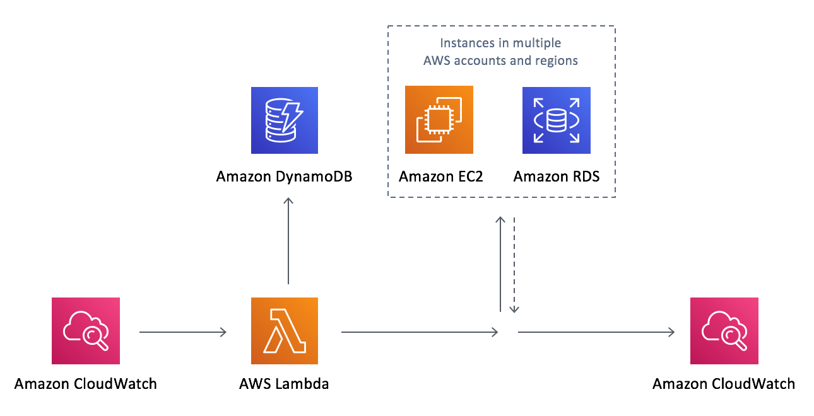

Projetos de Prática com HTML
Website Estático sobre Amazon EC2
Desenvolvi um site estático utilizando apenas html. O projeto foi desenvolvido com o objetivo de apresentar o serviço Amazon EC2 de forma simples e informativa. Para a construção do projeto, utilizei HTML5 para estruturar o conteúdo Este projeto foi uma oportunidade de aplicar meus conhecimentos em desenvolvimento web e demonstrar minha capacidade em HTML em um curso de Front-End da Escola da Nuvem + DigiCad.
Ver Detalhes
Receita de Bolo
Este projeto foi desenvolvido com o objetivo de explorar a história do bolo de cenoura e
apresentar uma receita deliciosa. Para estruturar o conteúdo de forma clara e
organizada, utilizei tags semânticas como <section>,
<main>, <footer>, <h2> e
<h3>. A história do bolo de cenoura foi apresentada de maneira detalhada, e a
receita foi organizada com o uso das tags <ul> e
<li> para listar os ingredientes e os passos de forma simples. A tag
<iframe> foi usada para incorporar vídeos relacionados ao bolo, enquanto a tag
<img> foi empregada para adicionar imagens apetitosas, tornando o visual do
site mais atrativo. O projeto foi uma ótima oportunidade para aprimorar minhas habilidades com
HTML e aprender a utilizar diferentes elementos para criar uma página bem estruturada e
informativa.